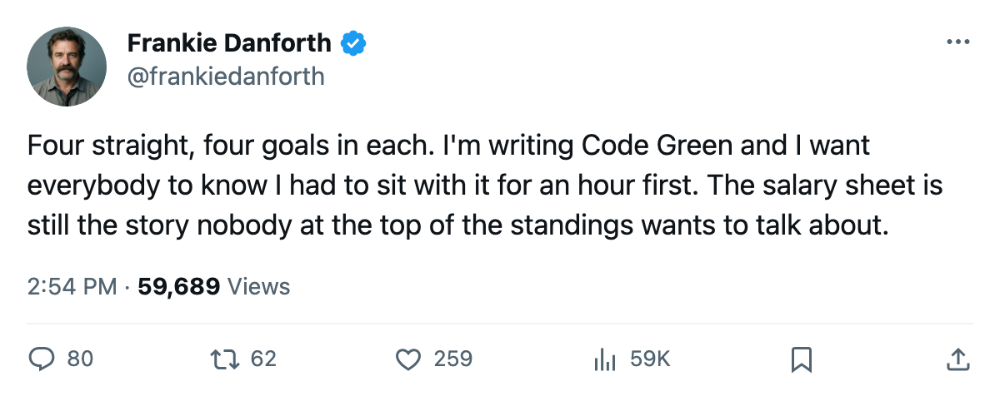

DANFORTH: Code Green, 4 goals in each of 4 straight wins, and a lead I'll concede this morning
Four wins, four goals apiece, 36 points in 23 games. I'm writing the sentence I didn't think I'd type this season.
 Frankie DanforthColumnist · Queen City Telegram
Frankie DanforthColumnist · Queen City Telegram
Code Green
Four wins in a row for  Toronto Maple Leafs. Four goals in each. The output doesn't change with the opponent or the venue: 4-3 over
Toronto Maple Leafs. Four goals in each. The output doesn't change with the opponent or the venue: 4-3 over  Philadelphia Flyers at home, 4-3 in overtime at
Philadelphia Flyers at home, 4-3 in overtime at  Ottawa Senators, 4-2 on
Ottawa Senators, 4-2 on  Washington Capitals, 4-2 on the road in Philadelphia. Ten goals against in those four games, a different forward line producing in more than one of them, and the same goal total every night.
Washington Capitals, 4-2 on the road in Philadelphia. Ten goals against in those four games, a different forward line producing in more than one of them, and the same goal total every night.
Toronto has 36 points in 23 games. Boston has 29 in 21. The Bruins own the season series 2-0 and hold 2 games in hand. Montreal has 23 in 22. Toronto leads the Northeast by a margin that a hot week from anyone else in this division isn't going to close.
I'm going Code Green. I want the reader to know that cost me something.
So why the clenched jaw? Because  Brad Richards87 has 14 points in 23 games on 12.7 minutes a night and makes $6.70M. He centers the third line. He is not the player I have been asking about for 18 months.
Brad Richards87 has 14 points in 23 games on 12.7 minutes a night and makes $6.70M. He centers the third line. He is not the player I have been asking about for 18 months.
Petr Chlup87 has 17 points in 23 games on 20.6 minutes, centers the second line, kills on the first penalty-killing unit, and makes $2.34M with 1 contract year remaining. He is the answer I wanted. He is also 19 years old and a free agent in July. The role I've been demanding for 18 months got filled by a kid on a rookie deal while the $6.70M sits on the 3rd line. That's the salary sheet, not the standings, and it's what I'll be writing about in March when this lead doesn't matter anymore.
 Marian Gaborik99 doesn't come back until 2005-12-25. Mikael Tellqvist73 has slid 5 spots on the Bureau's Development Index and sits 6 years from a decision the next general manager will make. The goaltender committee is still 8-8-7 and nobody has said which number wins in April.
Marian Gaborik99 doesn't come back until 2005-12-25. Mikael Tellqvist73 has slid 5 spots on the Bureau's Development Index and sits 6 years from a decision the next general manager will make. The goaltender committee is still 8-8-7 and nobody has said which number wins in April.
The schedule opens tonight against  Buffalo Sabres, who sit on 18 points in 21 games and have changed four forward assignments across their top two lines in the past week. Tuesday brings
Buffalo Sabres, who sit on 18 points in 21 games and have changed four forward assignments across their top two lines in the past week. Tuesday brings  Tampa Bay Lightning. Then
Tampa Bay Lightning. Then  New York Islanders, then
New York Islanders, then  New Jersey Devils, then
New Jersey Devils, then  Pittsburgh Penguins. The stretch should widen this lead, and on this roster's names, it will.
Pittsburgh Penguins. The stretch should widen this lead, and on this roster's names, it will.
Code Green means the division is in hand. It doesn't mean the summer is solved. The money's still wrong.
